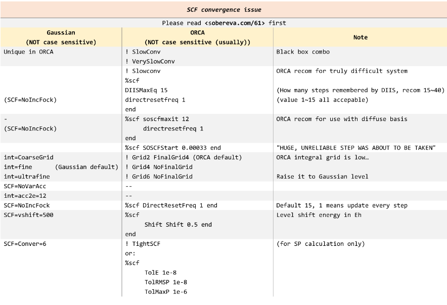
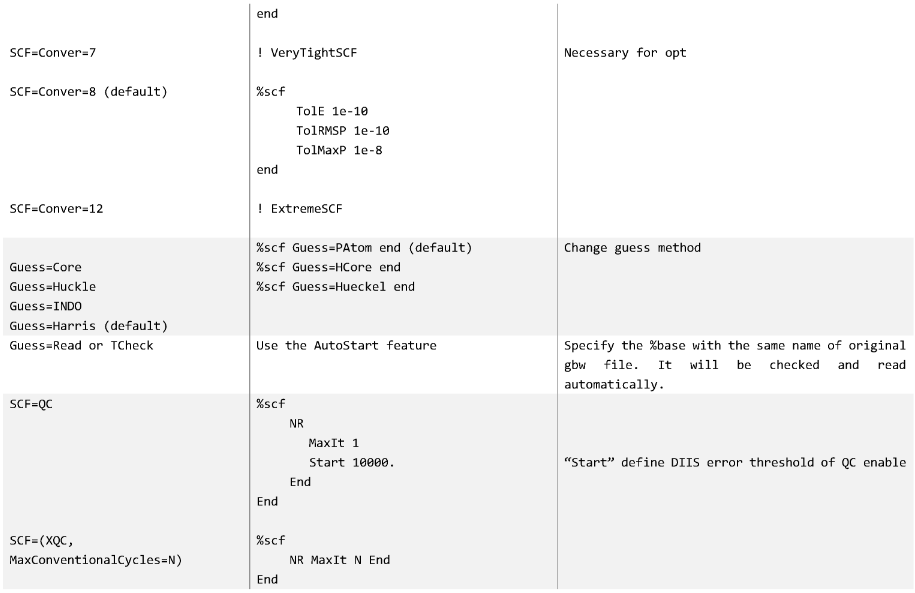
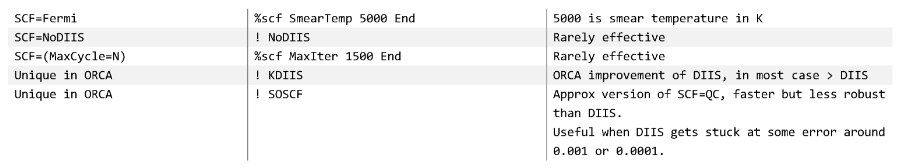

预估SCF的内存
当所需的内存大于
MaxCore时，ORCA会中止计算，可以计算估计的内存：1
2%scf DryRun true
end如果需要所估计的内存，并进行计算：
1
2%scf Print[P_SCFMemInfo] 1
end预估是每个核的内存，如果是并行计算，还需要×核数目。
收敛限
收敛不仅仅是影响收敛限，还有积分精度。如果积分误差大于收敛准则，则直接的SCF计算不可能收敛
首先可以在
%scf中定义scf的收敛级别，也可以直接简单的用类似于!TightSCF指定，可选择：Sloppy：TolE 3.0e-05Loose：TolE 1.0e-05Normal：单点默认，TolE 1.0e-06Medium：Strong：TolE 3.0e-07【Tight：默认几何优化，TolE 1.0e-08VeryTight：TolE 1.0e-09Extreme：TolE 1.0e-14。在双精度算术中接近计算机的数值零
1
2
3%scf
Convergence Sloppy
endORCA中用于单点计算的默认SCF收敛标准由关键字
NormalSCF给出。对于能量，分子特性，几何优化等而言，这可能并不总是可靠的设置。执行几何优化时，默认的SCF收敛会自动从NormalSCF更改为TightSCF，以减少梯度中的噪声。只有很少的情况下才需要超过TightSCF的设置，对于一些敏感的分子性质可能需要。收敛不仅仅是由能量决定，是多种共同决定的，收敛准则总是打印在输出中，比如常常用于过渡金属的
TightSCF：1
2
3
4
5
6
7
8
9
10%scf
TolE 1e-8 # 两轮能量变化
TolRMSP 5e-9 # 均方根密度变化
TolMaxP 1e-7 # 最大密度变化
TolErr 5e-7 # DIIS error convergence
TolG 1e-5 # 轨道梯度收敛
TolX 1e-5 # 轨道旋转角收敛
ConvCheckMode 2
ConvForced 1
endConvCheckMode：0：必须满足所有收敛标准。这是一个非常严格的标准。在这种模式下，即使一个收敛准则没有被满足，但是其他的收敛准则超额完成，程序也有机制来决定一个计算是否收敛1：只要满足一个就收敛，非常粗糙2：默认。检查总能量的变化和单电子能量的变化，如果总能量和单电子能量的比值恒定，delta（Etot）<TolE，delta（E1）<1e3 * TolE，自洽场是不再波动，计算可以认为是收敛的。如果重叠矩阵的特征值很小，密度可能未收敛到TolMaxP和TolRMSP要求的收敛。
ConvForced：0或者false：对于下一个计算步骤，收敛不是必须的1或者True或直接!SCFConvergenceForced：如果不满足收敛条件，程序停止。避免非收敛波函数计算费时，强制收敛在后HF（MP2，CCSD等）和激发态计算中（TDDFT，CIS，ROCIS）是默认的，可以修改为0。- 无论选择的
ConvForced是多少，性质或数值计算(NumGrad,NumFreq)都不会对非收敛波函数执行。
收敛情况
Orca SCF收敛与否的情况有三种【取决于收敛限 和
iterations（默认是125）】：完全SCF收敛
接近SCF收敛：没有完全收敛，但是 deltaE < 3e-3、MaxP < 1e-2、RMSP < 1e-3，否则是没有收敛。如果单点或几何优化接近收敛发生了，会出现
1
FINAL SINGLE POINT ENERGY -137.654063943692 (SCF not fully converged!)
没有SCF收敛
当没有SCF收敛或接近SCF收敛时，单点计算的默认行为是ORCA在SCF完成后立即停止（在MaxIter）。ORCA不会继续进行后HF的计算，计算分子性质或激发（例如TDDFT）。
当在指定的的优化先循环内发生接近SCF收敛时，几何优化（或 gradient job）的默认行为是ORCA继续进行几何优化的默认行为。可以通过ConvForced修改。
- 此行为旨在防止ORCA由于次要的SCF收敛问题而导致ORCA停止长时间的优化工作，该问题通常发生在优化开始时，并且通常会在以后的优化周期中得到解决（因为几何结构得到了改进，ORCA重复使用了先前的轨道作为猜测每个SCF）。当在优化周期中没有SCF收敛时，ORCA会停止计算。
相关算法
动静阻尼Damp
阻尼是最古老和最简单的收敛方法。它是Douglas Hartree在进行原子计算时发明的。阻尼是将旧密度和新密度混合为：
- α是阻尼系数，必须小于1（0-1之间都可，程序不会检查）。如果大于1，计算无法继续，因为没有新的密度加上并混合。
早期计算中新密度和旧密度之间很不相同而且波动很大时，阻尼非常重要。许多方案已提出动态改变阻尼因子，使之在开始时具有强阻尼，而在结束时无阻尼。ORCA中通过使用
CNVZerner=true【默认是false】。静态阻尼用CNVDamp=true【默认】。这两个是互斥的。当不在DIIS或SOSCF的收敛半径内时，可以在计算开始时使用它们。1
2
3
4
5
6
7
8
9%scf
# control of the Damping procedure
CNVDamp true
CNVZerner false
DampFac 0.98 # default: 0.7
DampErr 0.05
DampMin 0.1 # default: 0.0
DampMax 0.99 # default: 0.98
end更方便的是：
1
2
3%scf
Damp fac 0.98 ErrOff 0.05 Min 0.1 Max 0.99 end
end如果与DIIS或SOSCF结合使用阻尼，
DampErr值非常重要。默认是0.1Eh:- 一旦DIIS误差低于DampErr，就会关闭阻尼。
- 在使用SOSCF时，DampErr是指关闭阻尼时的轨道梯度值。
- 在比较困难的情况下，看可以将其调到很小，比如0.001，在某种程度上就是
!SlowConv
能级移动Shift
能级移动基本思想是改变虚轨道的能量，这样在对角化后，虚轨道和已占据轨道混合的强度就会降低，计算就会更顺利地收敛到期望的状态。在近简并的情况下，能级移动可以防止电子状态的翻转。在特殊情况下等价于阻尼。
与
DampErr相似，ShiftErr指的是在能级移动被关闭时的DIIS误差1
2
3
4
5
6%scf
# control of the level shift procedure
CNVShift true # default: true
LShift 0.1 # default: 0.25, energy unit is Eh.
ShiftErr 0.1 # default: 0.0
end更方便的用法是：
1
2
3%scf
Shift Shift 0.1 ErrOff 0.1 end
end
迭代子空间的直接反演(DIIS)
Direct Inversion in Iterative Subspace (DIIS)
DIIS使用一个标准来判断给定的密度与自洽有多远。Fock和密度矩阵的对易[F,P]是一种方便的测量这种误差的方法。利用这些信息，从现有的和以前的Fock矩阵中构造出一个更接近自洽的外推Fock矩阵，会比用DIIS观察到的线性收敛性更好。然而，在一些罕见的(开壳)情况下，DIIS的收敛速度很慢，或者在经过一些初步的计算后就不收敛了。
1
2
3
4
5
6
7
8
9%scf
# control of the DIIS procedure
CNVDIIS true # default: true
DIISStart 0.1
DIISMaxIt 5 # default: 12
DIISMaxEq 7
DIISBFac 1.2
DIISMaxC 15.0 # default: 10.0
endDIISBFac：默认1.05。当接近自洽时，用于求解DIIS的线性方程组趋向于线性依赖，利用因子DIISBfac使DIIS偏向于具有最低能量的SCF循环，如果Fock矩阵/密度没有最低的能量，就将DIIS矩阵的所有对角元素与这个因子相乘来实现。DIISMaxEq：默认5。DIIS外推需要记住的旧的Fock矩阵的最大数目。建议5-7的值。如果标准DIIS不能达到收敛，一些计算用改参数的可以用。DIISStart：如果DIIS在SCF开始时导致问题，则可能需要在稍后的阶段调用它。DIISStart控制DIIS程序的开始。默认是0.2eh，通常在0-3个周期之后启动DIIS。DIISMaxIt：控制DIIS启动的另一种方法是调整DIISMaxIt值，该值设置了最大的周期数，之后无论误差值如何，都将启动DIIS。
更方便的写法：
1
2
3%scf
DIIS Start 0.1 MaxIt 5 MaxEq 7 BFac 1.2 MaxC 15.0 end
end
另一种DIIS算法:KDIIS
- KDIIS算法的目的是利用DIIS外推法和一阶微扰理论将任意能量表达式的轨道梯度降至零。因此，该方法是无对角化的。它在许多情况下优于标准的DIIS算法，但并不总是如此。该算法用关键字
!KDIIS，可用于RHF, UHF和CASSCF。
近似二阶SCF (SOSCF)
SOSCF是SCF程序的一种近似二次收敛的变体。SOSCF对反轨道Hessian进行初始猜测，然后递归使用BFGS公式更新轨道旋转角度。随着信息从几次迭代积累，对反轨道Hessian的猜测越来越好，计算达到超线性收敛的状态。比DIIS稍微好一点，花费的时间稍微少一些。当DIIS卡在0.001和0.0001的误差时可以用。
缺点如下：在SCF的开始阶段，轨道梯度(描述已占据和虚MOs混合的总能量对旋转的导数)很大，因此离二次区间还远。在这种情况下，计算会不成功的，甚至可能出现严重错误。因此，建议只在 DIIS可能导致的不完全“收敛”的SCF中的最后调用SOSCF过程
1
2
3
4
5
6%scf
# control of the SOSCF procedure
CNVSOSCF true # default: false
SOSCFStart 0.1 # default: 0.01
SOSCFMaxIt 5 # default: 1000
endSOSCFStart：轨道梯度的阈值。当轨道梯度，或者说DIIS误差低于SOSCFStart时，启动SOSCF程序。SOSCFMaxIt：即使轨道梯度仍然高于SOSCFStart, 仍然是启动SOSCF的迭代处。
简单写法：
1
2
3%scf
SOSCFStart 0.1 MaxIt 5 end
end对于许多过渡金属配合物的计算，SOSCF的启动标准最好保持保守，否则可能会产生错误。推荐0.01或更低
全二阶SCF(Newton-Raphson SCF)
NR一旦计算在其收敛半径内,它通常收敛非常快和高精度。NR迭代比常规SCF计算所需的时间要高得多，但是这可能会被减少的周期数补偿。对于一个正常的表现良好的分子，在DIIS过程中经过10-15次迭代收敛，不需要调用NR。
- 在比较复杂的体系中可能可以用。
- 当需要精确的SCF解，例如用于数值频率计算可以使用。
- 这些情况也可以降低CP-SCF的收敛阈值(Z_Tol)来实现。
一旦使用NR，其他所有方法都会被关闭。达到收敛后，通过Fock算符的单一对角化，轨道再次被规范化。为了帮助CP-SCF过程的收敛，轨道在两次迭代之间是准规范的。这意味着在轨道更新后，将Fock算符的occ-occ和virt-virt块分别对角化，选取已占据轨道和虚轨道作为这部分Fock算符的特征函数。
NR有两个选项，和SOSCF比较相似：
1
2
3
4
5
6%scf
# no Newton-Raphson by default
NRMaxIt 10 # iteration at which NR is switched on, default 150
NRStart 0.05 # DIIS error at which NR is switched on, default 0.0033
end
end更方便的方式是直接用
! NRSCF，这将在DIIS误差低于0.0033(默认值)时调用NRSCF。如果还指定了SLowConv，NR收敛将在DIIS误差低于0.002(默认值)时调用某些情况下，轨道Hessian是奇异的或近乎奇异的，NR可能会失败。那么可以采取更谨慎的方法augmented-Hessian。通过！AHSCF指定。它和NRSCF的设定值先沟通，但是引入了扩充的Hessian。
从技术上讲，该程序在每次NR迭代中求解大量的线性方程组。结果表明，所要求解的方程与类电场方程的CP-SCF方程是完全等价的，只是右边在MO的基础上被Fock算子的占据/虚轨道块所取代。因此，该实现在每次SCF迭代中调用CP-SCF程序。然后使用收敛的CP-SCF一阶波函数系数更新当前轨道。因此，每次NR迭代的花费与用于相同体系的一阶微扰单电子场型的CP-SCF计算相同。
NR实现的一个重要方面是NR自身检查收敛性。轨道梯度在CP-SCF程序调用之前计算。如果轨道梯度低于它的阈值(TolG)，不管其他收敛指标是什么，收敛中止。道梯度是一个严格的标准，因此结果被认为是可靠的。如果需要更严格的收敛，阈值TolG和TolX应该降低。
例子：
- 一个HF几何优化5圈收敛的正常体系
1
2
3
4
5! RHF TZVPP Opt VeryTightSCF
* xyz 0 1
N 0 0 0
N 0 0 1
* - 用可选的一阶SCF也是5全，但是每个优化步需要更多的SCF迭代。
1
2
3
4
5
6! RHF TZVPP Opt TightSCF
! NRSCF
* xyz 0 1
N 0 0 0
N 0 0 1
*
- 一个HF几何优化5圈收敛的正常体系
CP-SCF程序与收敛和方法标志一起调用，这些标志也在z向量计算中使用。通过%
method1
2
3
4
5
6
7
8
9
10%method
Z_solver Pople # Pople's solver. Usually great!
CG # conjugate gradient
DIIS # Pulays DIIS
AugHess # Augmented Hessian (for SCF only)
Z_MaxIter 64 # maximum number of CP-SCF iterations
Z_MaxDIIS 10 # for DIIS: maximum number of expansion vectors
Z_Shift 0.3 # for DIIS: level shift
Z_Tol 1e-6 # convergence tolerance on residual
endNR方法的适用范围与CP-SCF程序的适用范围完全一致，SCF程序将立即受益于CP-SCF模块的任何改进。
SCF问题
SCF的能量或性质很奇怪
- 例如与先前的计算或其他程序不同，或者电荷，自旋布局或轨道很奇怪
- 在任何SCF计算(DFT或HF)中可能发生的情况是，它会收敛到一个激发态(即不同的轨道占据)，甚至是轨道空间的一个鞍点，而不是最小值。这种情况很少见，但更可能发生在高度对称的情况下(如原子、双原子或其他高度对称的几何结构，如苯和二茂铁)。这个问题随后会影响 post-HF 的计算，如MP2、耦合簇。
方法：
尝试不同的SCF收敛：默认是DIIS一般比较好，使用KDIIS等可能会导致收敛到其他情况
对初始轨道尝试不同的猜测：Guess可以用HCore、Hueckel、PAtom、PModel 、MORead。
尝试改变初猜MO的轨道顺序：错误的SCF解决方案的常见原因是，位于最高位置的电子占据了错误的轨道。 通过读取先前收敛解的轨道并交换HOMO和LUMO轨道（或者可能是：HOMO和LUMO + 1，HOMO和LUMO + 2，HOMO-1和LUMO等），可以将SCF重新收敛到正确的位置解。
通过人工检查电子结构，人们通常可以知道是否有问题。通常，Mulliken电荷或自旋居数已经可以揭示出是否有什么地方出了问题
在SCF之上执行TDDFT计算：通过求解TDDFT方程并分析第一个跃迁能量，可以揭示出您是否已经收敛到某种奇怪的事物：鞍点或激发态（不同的电子配置）。在输入文件中：
1
%tddft nroots 4 end
- 在基态上执行的TDDFT计算应该为正，如果第一激发态具有负的跃迁能量就是明显错误，表明收敛到了激发态或者鞍点
- 另外，即使没有负跃迁能量也并不排除SCF是激发态，根据在当前SCF解决方案上执行的TDDFT线性响应方程式，可能根本无法获得真实的基态。
对SCF波函数进行稳定性分析
1
%scf Stabperform true end
一旦SCF收敛，将计算电子Hessian，并且ORCA将报告SCF是否收敛到轨道空间的鞍点
1
2
3
4
5
6
7
8
9
10
11
12
13
14
15
16
17
18SCF STABILITY ANALYSIS RESULT
-----------------------------
RHF/RKS->UHF/UKS - triplet - external
Root Eigenvalue (au)
0 -0.132711
1 -0.045713
2 -0.021069
Stability Analysis indicates an UNSTABLE HF/KS wave function with SEVERAL negative eigenvalues.
--------------------------------------------------------------------
WARNING
Although your wave function is converged, the stability analysis
revealed an instability towards an UHF/UKS solution.
It is up to you to decide whether to use the wave function.
If you want to, it can be retrieved through the gbw file for
use as a guess for an UHF/UKS calculation or for RHF/RKS post-SCF.
--------------------------------------------------------------------- 此处的稳定性分析清楚地表明，SCF已收敛到n阶鞍点，而不是最小值。
- 对于UHF / UKS波函数，程序可以在与负特征值关联的特征向量方向上移动解，并尝试重新收敛。
- 对于RHF / RKS，这是不可能的，必须通过其他方式找到正确的解决方案（如上所述）。
- 注意：稳定性分析只能告诉您是否已经收敛到鞍点。它无法显示是否已收敛到激发态。从稳定性分析的角度来看，通过求解SCF方程而找到的激发态可能看起来完全正确。
- 注意，该关键词不能与RIJK等加速一起使用
SCF不收敛
解决收敛的一般方法
首先检查基本问题：
- 检查几何结构是否合理或者微调到更合理的结构
- 单位是Å还是Bohr
- 电荷和自选多重度
- 重元素的基组和ECPs
- 是否有一个复杂的具有多个开壳的开壳结构，也许需要一个对称的DFT策略
- 阴离子有时在气相中不稳定，因此可能需要使用连续模型（CPCM）来稳定最高的占据轨道。
如果SCF几乎收敛（监控DeltaE和orbital gradient），但在最大迭代次数之前未能收敛，则只需增加最大迭代次数即可，而且还可以重启计算使用前面的gbw文件初猜
1
％scf MaxIter 500
改变初猜，可以用
PAtom，Hueckel和HCore代替默认PModel猜测尝试收敛1或2电子的氧化态（理想情况下为闭壳态），读取轨道重试。
尝试从一个较小的基组开始计算。较小的基组收敛更好。可以选择
GuessMode=CMatrix还是GuessMode=FMatrix影响收敛行为。如果SCF在第一次迭代中剧烈振荡或只是缓慢收敛，格点（DFT或COSX）可能有问题，可以增加格点精度。
也可能表示需要阻尼，
SlowConv/veryslowconv或者使用level shiting
1
shift shift 0.5 erroff 0 end
如果计算DIIS误差非常接近收敛，但是接着收敛非常慢：
- 可以使用
!SOSCF打开SOSCF（在UHF/UKS中这个是默认关闭的），但是SOSCF不总是对开壳层有用 - 或者用二阶方法
! NRSCF或! AHSCF。 - 也可以使用level shiting
- 可以使用
如果SOSCF于到了问题（”HUGE, UNRELIABLE STEP WAS ABOUT TO BE TAKEN”），可以、用!
NOSOSCF关闭SOSCF或者通过在SOSCF启动之前为轨道梯度选择一个较低的值来延迟SOSCF的启动（通常对于TM复合物而言是必需的）1
2
3%scf
SOSCFStart 0.00033 ＃轨道梯度的默认值为0.0033。在这里减少了10倍。
end尝试收敛一个更简单的计算（例如BP86 / def2-SVP或HF / def2-SVP），并从该计算中读取轨道作为猜测：
1
2MORead
%moinp "bp-orbitals.gbw"如果是DFT，可以尝试HF计算：HF会比DFT更好的收敛，因为有更大的HOMO-LUMO gap
- 如果是UHF计算，可以先尝试ROHF（尤其是SAHF 或者CAHF），再进行UHF
收敛TM复合物和其他困难的分子体系
过渡金属配合物可能难以收敛，尤其是开壳物种。 ORCA具有一些内置关键字，可以为此类困难的系统选择适当的SCF算法设置。使用这些关键字将减慢SCF过程，因此仅应在必要时使用。对于闭壳有机分子，默认的SCF程序或KDIIS + SOSCF通常会导致SCF收敛更快。
! SlowConv、! VerySlowConv主要修改有助于收敛的阻尼参数，尤其是在第一次SCF迭代中存在较大波动时，使用较大的阻尼因子和阻尼，直到DIIS进入收敛域- 使用
Slowconv有时会收敛太慢，一旦达到特定阈值，就可以使用SOSCF加快收敛速度。请注意，对于开壳层，SOSCF会自动关闭。根据需要使用SOSCF关键字将其重新打开（尽管它并不总是适用于开壳层），或延迟启动（如上所述）。
- 使用
修改 level shift也可以加快收敛速度：
1
2
3
4
5! SlowConv
%scf
Shift Shift 0.1 ErrOff 0.1 end
end
KDIIS+SOSCF
使用KDIIS算法结合和不结合SOSCF，通常都可以比其他SCF过程更快地收敛。
1
! KDIIS SOSCF
非常有问题的系统，比如金属团簇
以下SCF设置通常会导致SCF收敛，同时极大地减慢计算速度（即，既需要更昂贵的SCF迭代，也通常需要更多的SCF迭代），其他都不行可以试试
1 | ! Slowconv |
directresetfreq决定了计算全Fock矩阵的频率。值为1意味着在每次迭代中都要进行重新构建，虽然代价非常昂贵，但可以消除可能阻碍收敛的数值噪声。默认值是15。可以将directresetfreq设置为1到15之间的值。
收敛带弥散函数的共轭自由基阴离子
当计算带弥散函数的共轭自由基阴离子（例如ma-def2-SVP）时，发现Fock矩阵的完全重建可以帮助收敛以及尽早启动SOSCF。
1
2
3
4%scf
soscfmaxit 12
directresetfreq 1
end
处理线性依赖性
对于大基组或者弥散基组（例如aug-cc-pVTZ），有时会在计算中发生该系统存在一些冗余（依赖于线性的函数）的情况。这可能会引起数值不稳定性，例如SCF收敛问题：重叠(或相关的矩阵)的逆用于正交化目的，如果接近零的特征值没有得到正确处理，逆会变得不明确，SCF过程就会在数值上不稳定。
可以通过检查重叠矩阵的最小特征值来确定这种线性相关性。
比如这个就表明了基组的线性相关性，因为最小特征值远小于阈值1e-08，最好检查基组是否合理，是不是真的需要加弥散等。如果基组是非标准的，则可能值得检查一下是否正确组合了（例如，重复的基函数）。否则，在ORCA中会自动处理小于1e-08的值的线性相关性，其中将这些特征值设置为零以消除数值不稳定性问题。
1
2
3
4
5
6
7Diagonalization of the overlap matrix:
Smallest eigenvalue ... 4.956e-12
Time for diagonalization ... 0.313 sec
Threshold for overlap eigenvalues ... 1.000e-08
Number of eigenvalues below threshold ... 1
Time for construction of square roots ... 0.073 sec
Total time needed ... 0.387 sec- 最小的特征值和阈值都在结果中，以及小于阈值的函数的数目（会被舍弃），最好在SCF收敛后检查是否有一样的0数目的轨道能量。对于特征值是0的函数，level shift不会被应用。
阈值没有严格规定，但是应该介于1e-5至1e-之间，可以手动增加阈值。
1
2
3%scf
sthresh 1e-7 # default 1e-8
end- 设得过低即使SCF收敛，结果会被近零的向量噪声所污染。而一般在1e-7也能得到结果，但是大于这个，就可能有太多函数被舍弃掉，从而应i像计算结果。
如果从基组中移除了冗余的向量，不应该用
！moread noiter来读取SCF轨道，由于重新正交化问题，SCF可能会爆炸。可以用！Rescue moread可以防止这种情况。
升格点到
!Grid5 FinalGrid6水平1
2
3
4%scf
convergence loose
maxiter 500
end
高斯SCF关键词对应


